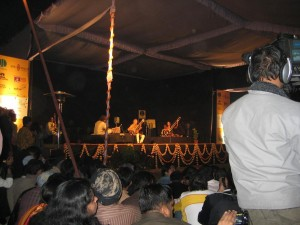

Meetings along the Edge
I’ve seen Ravi Shankar perform so often in my life that I took for granted that he’d always be somewhere, close by, playing his sitar with a sweet smile on his face.
The last time I had the pleasure of hearing his genius was a total “fluke” (there’s no such thing, but the word works). I’d just started working in Delhi, India, and was en-route to view a site for a work retreat when I saw a massive poster announcing that Ravi and Anoushka Shankar would be offering a free performance at a park in Delhi the next evening. I think the rickshaw driver thought I was having a stroke, because I nearly fell out of the rickshaw to make sure I was reading it right.
“Ravi Shankar! Here! With Anoushka! Wow!!!! A free show!!!! Double Wow!!!!!” How it had never occurred to me that he might perform in India is another story …London, Germany, San Francisco, Argentina, New York, Mexico, San Diego, Paris, Los Angeles, of course …I even heard tell that I’d just missed him during one of my trips to Morocco back in the late ‘80’s. Like me, Ravi was worldwide, and somehow I never expected that he’d be performing in the city I was living in (except for San Diego, of course, because he lived close by in Encinitas) …never mind that the city happened to be in the country in which he was born and reared.
He has a piece called, “Meetings along the Edge.” The first time I heard the title, I thought, ‘It seems that I’m always meeting Ravi Shankar, and his amazing music, when I’m on the edge of some journey …or just before I step off the edge into another journey.’ I loved the title almost as much as I love the song.
Anoushka was a special treat for me. I’d just seen her in Los Angeles a week or so before I’d left for India. She was the headliner of an incredible night of Indian music at the Hollywood Bowl. I had a blast dancing around with my friend Sheila, and then sat through the outrageously beautiful music Anoushka and her band wove around us. I could feel her father’s smile in every note.
So, I wrote down the information and made my plan. The next night, bundled against the cold, I went out, armed with the address and a deep desire to go to that transcendent place Ravi’s live music always takes me to. After a 45-minute rickshaw ride to some unknown (to me) spot in Delhi, I hopped out and walked into this spectacular park, filled – like many of the parks in Delhi – with the ruins of a lost age. It wasn’t long before I found it – the makeshift stage with cloth and flowers overhead, the enraptured fans standing, sitting on chairs, or cross-legged in the grass. I felt like I’d arrived – not in a park in a strange city, but at a familiar rest stop filled with love and warmth.
I was in Ravi Shankar’s presence. All was totally right with the world.


 This one is blurry because I laughed when he laughed.
This one is blurry because I laughed when he laughed.
I have no idea how long the concert lasted …I believe I was home shortly after midnight. I remember floating back toward the street, and then sharing a rickshaw with a sweet young American who was in Delhi volunteering. I can’t tell you what we talked about, although I remember giving him my card and offering to interview him for a volunteer post with the non-profit I worked with. Mostly I remember thinking that Delhi couldn’t be so bad if Ravi and Anoushka could see fit to bless it with their sweet music.
As bad as Delhi got for me in the months that followed, Ravi continued to help me to see that there is light there. When I found myself searching for forgiveness in Delhi, I found that it was Ravi’s sitar I heard in my ear. When I found myself amazed/horrified by the sacred and profane there, it was always Ravi’s smile I saw with my mind’s eye.
Just a few days ago, I had the thought that music is coming back into my life. Actually, it was a feeling, more than a thought. I could feel music calling me. I began to imagine great concerts. DMB is coming to Philly soon …I thought, “Cool, I’ll go see Dave, then it won’t be long before Ravi’s in town and, well, I’ll have to go see him, ‘cause that’s just how it is.”
Yesterday, I awoke to find that Ravi won’t be rolling through town again anytime soon.
I’m sad to know that I’ll only hear Ravi on my music machines and see him in my mind’s eye (or on videos …whatever). I am elated because I have so many amazing memories of the seeing great genius Ravi Shankar perform. I am grateful to/for his Anoushka (he called her that at the Delhi show, “My Anoushka,” with a sweet smile on his face) for learning from him …for all the beauty she brings to the sitar, for all the beauty the sitar brings through her.
I have this great fiction playing in my head – it involves my grandparents, Ravi Shankar and three sitars. They all have sweet smiles on their faces as they make the most beautiful music ever played ... merriment abounds.
I suppose that’s how I saw the great Ravi Shankar …as a grandparent of sorts …one I was graced to follow all over the world. One whose joy shone through in every note he played. One who showed me more means of transcendence and transformation than any yoga class I’ve ever attended.
While I will certainly miss his presence in the outside world, I am overwhelmingly grateful to carry Ravi Shankar in my heart.